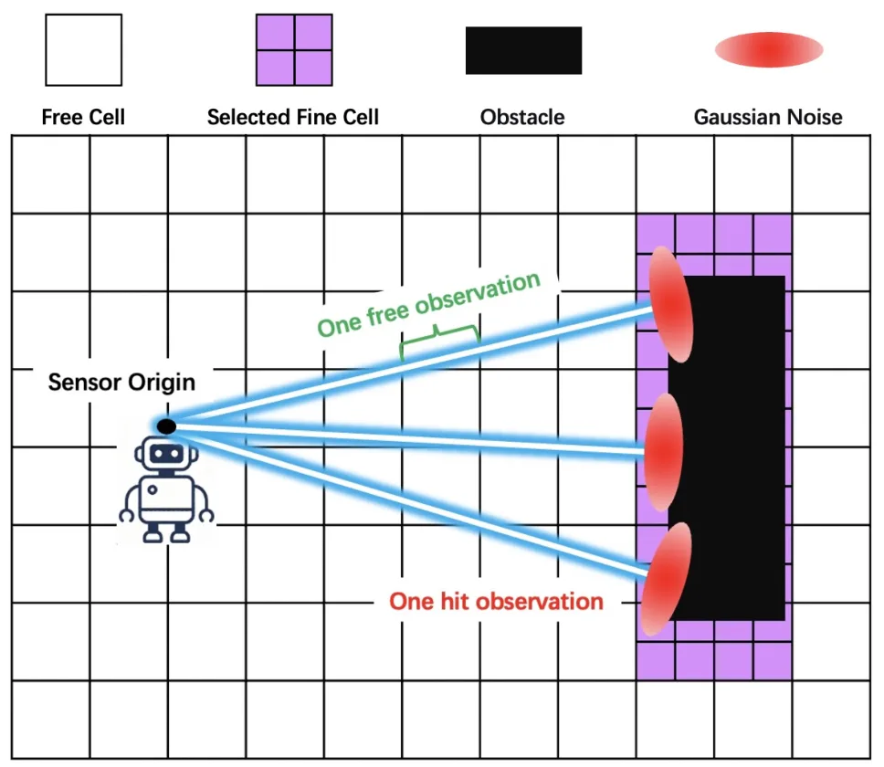
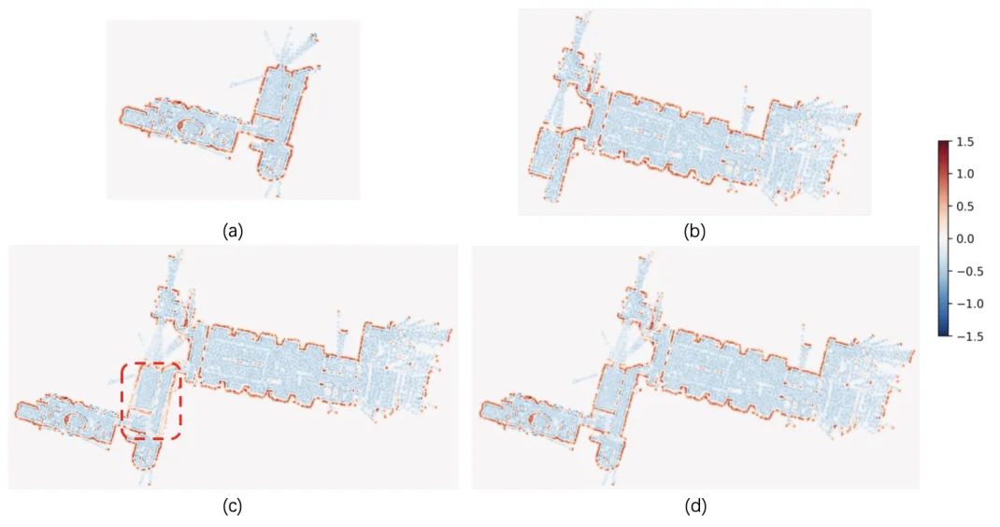
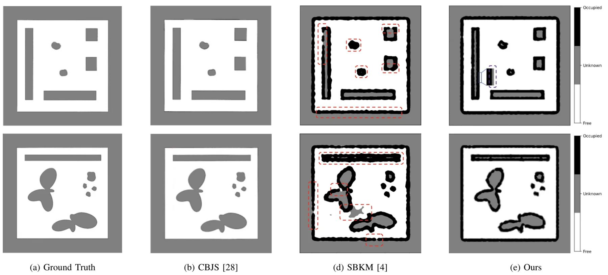
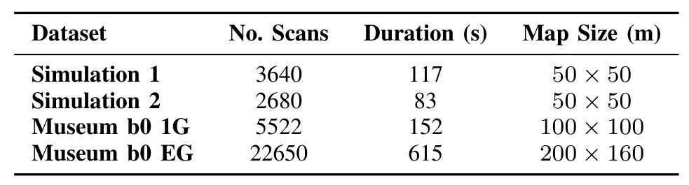
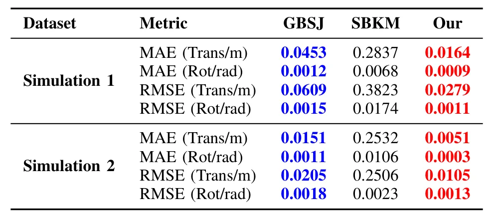
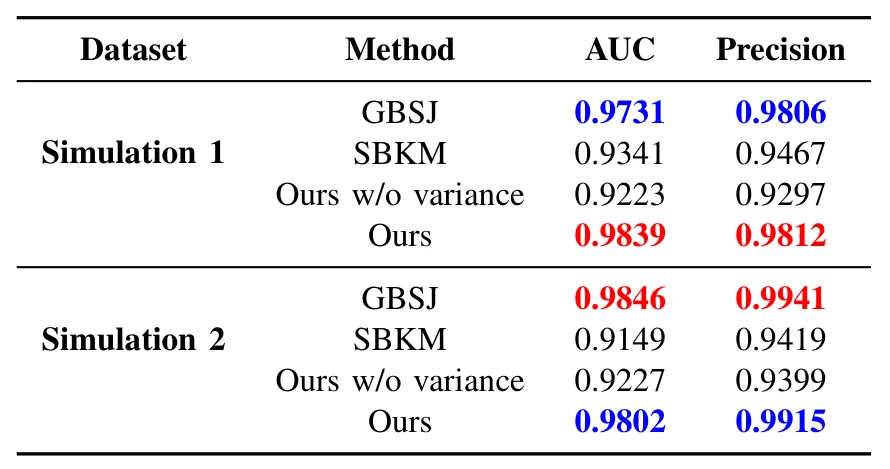

基于方差加权子图拼接的信息保持连续占据建图Information-Preserving Continuous Occupancy Mapping with Variance-Weighted Submap Joining
直接命中 SLAM 后端/地图融合问题，强调不确定性和解析 Jacobian；后续关键是规模、实时性和开源实现。
一句话工作总结
该工作把 occupancy 子图拼接从离散栅格推进到带方差估计的连续 log-odds 场，面向大尺度 SLAM 全局一致性。
摘要
大尺度 SLAM 面临轨迹漂移累积和维护全局一致性的计算成本增长。子图拼接通过先构建局部一致子图、再融合为全局地图来缓解这些问题，但现有 occupancy-based 方法通常在离散栅格上操作，优化梯度不平滑且忽略占据估计不确定性。本文提出首个连续概率子图拼接框架，在 latent log-odds 空间中联合优化子图位姿和全局 occupancy field。框架使用信息保持的 sparse Bayesian formulation，把原始 occupancy observations 压缩为 sufficient-statistic log-odds tuples，同时保留后验信息；由此得到预测均值和方差闭式解，并导出带解析 Jacobian 的子图拼接目标。实验显示该方法在模拟和大尺度真实数据上提升位姿精度、全局一致性和不确定性校准。
Large-scale SLAM remains challenging due to accumulated trajectory drift and the increasing computational cost of maintaining global consistency. Submap joining alleviates these issues by constructing locally consistent submaps and subsequently fusing them into a global map. However, existing occupancy-based submap joining methods operate on discrete grids, resulting in non-smooth gradients during optimization and neglecting the uncertainty associated with occupancy estimates. We propose the first continuous probabilistic submap joining framework that jointly optimizes submap poses and a global occupancy field in the latent log-odds space. The framework employs an information-preserving sparse Bayesian formulation that compresses raw occupancy observations into sufficient-statistic log-odds tuples while retaining the posterior information of the original observations. This yields closed-form predictive mean and variance estimates for occupancy mapping, which directly enable a submap joining formulation with analytical Jacobians, leading to more accurate submap joining and yielding a closed-form optimal global map upon pose convergence. Experiments on both simulated and large-scale real-world datasets demonstrate that the proposed method achieves higher pose accuracy and improved global consistency than state-of-the-art grid-based submap joining approaches, while producing more compact map representations and better-calibrated uncertainty estimates than existing continuous occupancy mapping methods.
中文解读摘录
- 作者：Ray Zhang, Marcus Greiff, Thomas Lew, John Subosits；类别：cs.CV / cs.AI / cs.RO；发布日期：2026-06-09；备注：16 pages, 12 figures；采集 score=14
- 核心问题：局部点云配准在 LiDAR/RGB-D tracking 中通常依赖 correspondences 或 ICP 类最近邻，特征稀疏、退化或外观变化时容易漂移；RKHS/CVO 类 correspondence-free 方法更稳但一阶优化速度偏慢。
- 方法亮点：把点云表示为带 point-wise anisotropic kernels 的连续函数，核函数编码局部几何，使法向方向更强约束、切向方向更宽松；优化上提出带近似 Riemannian Hessian 的二阶流形优化。
- 结果信号：相对以往一阶 RKHS 配准 solver 最高加速约 10×；在驾驶域 LiDAR tracking 的特征稀疏场景中，平移和旋转漂移均降低超过 55%；RGB-D 与物体配准 benchmark 也显示比 ICP 类方法更稳。
- 关注价值：这是今天最接近 SLAM 前端/里程计的工作。若开源或实现成本可控，值得尝试替换/增强 frame-to-frame LiDAR odometry、RGB-D odometry 和全局初始化后的精配准模块。
图表/页面预览

{kind=link}

{kind=link}

{kind=link}

{kind=link}

{kind=link}

{kind=link}
